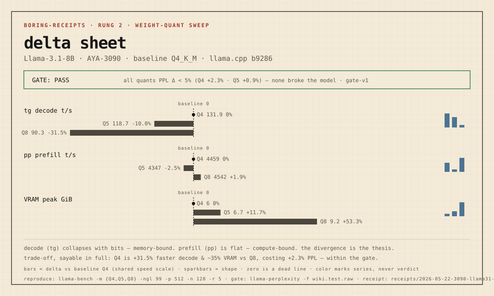

TURBOQUANT-CUDA-BENCH · LAB
Boring Receipts
Send branch + command shape. We return boring receipts.
The ladder
| rung | who | proves | reproducible by |
|---|---|---|---|
| 1 — noob | anyone with a GPU | prebuilt llama.cpp + a GGUF, one command, real tok/s | a beginner in ~10 min |
| 2 — quant | local user | same model across quants: the speed↔footprint trade-off | rung 1 |
| 3 — build | tinkerer | source build + flags (flash-attn) delta | rung 2 |
| 4 — serving | someone who serves | vLLM/SGLang throughput, req/s, TTFT, ITL under concurrency | rung 3 |
| 5 — Waffle House | the community | a TriAttention/longctx/MTP branch + delta + quality gate + failures | rung 4 |
Nodes
| node | machine | engine | status |
|---|---|---|---|
| AYA-3090 | Windows · RTX 3090 24 GB | llama.cpp (native) | live |
| AYA-3090-wsl | WSL2 Ubuntu | vLLM / SGLang | available |
| AYA-4090 | RTX 4090 · Win+WSL2 | vLLM | later — LLM-busy |
Receipts
Rung 2 — weight-quant sweep · Llama-3.1-8B · AYA-3090. The delta sheet: the canonical visual. Gate stamp first, delta over a zero dead-line, color marks series not verdict.

decode (tg) collapses with bits — memory-bound. prefill (pp) stays flat — compute-bound. the divergence between the two is the whole prefill/decode thesis. · full receipt
Rung 1 — baseline · prebuilt llama.cpp b9286, Q4_K_M: pp512 4448 t/s, tg 131 t/s, 6.3 GB VRAM, ~345 W. full receipt
Read the doctrine
- CANON — for whom (a receipt re-executes; the ladder is transferable trust)
- AXES — what (axes of variation, the quality gate, scoring, visual form)
- GLOSSARY — in what words (tok/s, pp/tg, TTFT, quant, ngl…)
Boundary: offline single-node receipts. Not a leaderboard, not a vendor benchmark, not serving-readiness. The canonical minimal KV/long-context receipt the upstream issue #18722 left unowned.